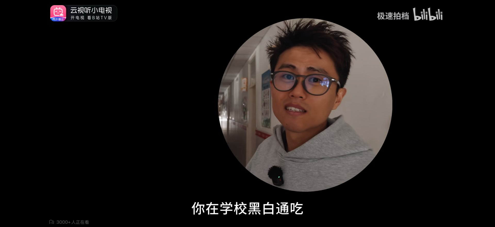

陪看 BOT · 和你看《极速拍档》
同一只小电视，竖屏看西游记、横屏看极速拍档。它跟着画面主体看、偶尔脱口一句短念头，也会困、会走开、会醒来。
BOT 语言逻辑：视频上传时预处理抽离画面语义 · 故事线 · 剧本；播放时 BOT 据剧本 + 关系 + 记忆 + 喜好 + 时间实时表演。台词是它基于画面说的短念头（观感、愿望，如"迈阿密夜景美""好帅""我喜欢八戒"），像人脱口而出——不堆主语、不堆描述；没有身体视角，不用"这／那／他"指代画面，但用"我"说自己。词直接连成句，逐词吐出。 三大基础状态：陪你看 · 外出模式 · 睡眠模式——先画三态，再挂表情全量清单。 表情全量清单：每一个颜文字单独一张卡，不合并、不轮换，方便逐个挑。 表情选择器：选情绪 → 点表情 → 竖屏 / 横屏里的 BOT 同步换成这张脸。
"陪你看"是默认态；它想去追自己的内容 → "外出模式"（退到磨砂玻璃后看自己的电视）；深夜困了 → 自动"睡眠模式"；被叫醒或天亮 → 回到"陪你看"。
同一台手机，竖着拿／横着拿：两屏的 BOT 都是同一个灵动岛本体——那块带白光的小黑屏，里面只画竖条眼·素颜，会眨眼。竖屏时岛在正上方；横屏时岛挪到右下角，贴着下边缘、离右边稍远。两屏等大（机身旋转 90°）、眼睛等大。具体表情在下方"表情选择器"里点选。

切节点 = 换画面 = BOT 按新画面重新找焦点、重新说短念头。演出逻辑（看 → 思考 → 说话）不变。
先选情绪，再点某张脸——上方竖屏 / 横屏里的 BOT 会立刻换成这张表情。岛上表情用奶油白显示（黑底才看得见）。